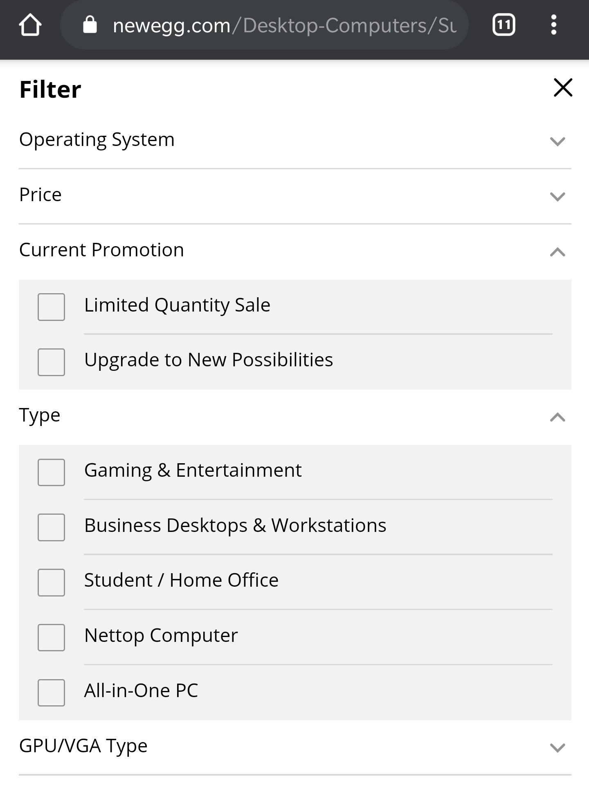

Design Priciples
Visual Hierarchy
Disney
In this website, Disney plus utilizes visual hierarchy to establish itself as the most important of the broadcasting. Although you are supossed to see that hulu and espn are offered, Disney plus flexes it's dominance by making itself larger and more visable.
Hick's Law

Newegg
Newegg is an online store that sells a wide variety of electronics. Finding one of their thousands of carried products can be quite difficult. They have implemented a filtering system where you can firs choose what type of product you want. In this example I used "desktop computers", they then offered 24 categories to filter it down further, each with their own sub-category. this means that the user has all kinds of filtering options while searching for a product. This is a good example of a website that would be a nightmare to use, if they didn't follow Hick's law.
Visual Hierarchy
Disney
In this website, Disney plus utilizes visual hierarchy to establish itself as the most important of the broadcasting. Although you are supossed to see that hulu and espn are offered, Disney plus flexes it's dominance by making itself larger and more visable.